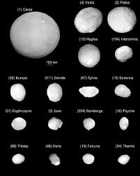

|

Asteroitler
Asteroitler, Güneş Sistemi’nin erken dönemlerinden kalan, gezegen oluşum sürecinde birleşememiş kaya ve metal parçalarıdır. Genellikle düzensiz
şekillidirler ve boyutları birkaç metreden yüzlerce kilometreye kadar değişir. Çoğu, Mars ile Jüpiter arasında yer alan Asteroit Kuşağı’nda bulunur;
ancak bazıları Dünya’ya yakın yörüngelerde veya Güneş’e çok daha uzak bölgelerde de gözlemlenebilir.
Asteroitlerin bileşimi, bulundukları konuma ve oluşum süreçlerine bağlı olarak farklılık gösterir. Bazıları metal açısından zengindir (özellikle demir
ve nikel içerir), bazıları ise karbon ve silikat gibi minerallerden oluşur. Bu çeşitlilik, Güneş Sistemi’nin ilk zamanlarında yaşanan kimyasal ve fiziksel
farklılıkların bir yansımasıdır.
Asteroitler, uzay araştırmaları açısından büyük önem taşır çünkü Güneş Sistemi’nin geçmişine dair ipuçları barındırırlar. Bilim insanları,
bu gökcisimlerinin incelenmesiyle gezegenlerin nasıl oluştuğunu ve evrimleştiğini anlamaya çalışmaktadır. Japonya’nın Hayabusa ve NASA’nın OSIRIS-REx
görevleri, asteroitlerden örnek getirerek bu konuda önemli veriler sağlamıştır.
Bununla birlikte, bazı asteroitler Dünya için potansiyel tehlike oluşturabilir. Yakın Dünya Asteroitleri (NEA) adı verilen bu gökcisimleri, zaman zaman
Dünya’nın yörüngesine oldukça yaklaşır. Bu nedenle gökbilimciler, bu cisimleri sürekli olarak izlemekte ve olası çarpışma risklerini hesaplamaktadır.
Sonuç olarak, asteroitler yalnızca uzayın rastgele taş parçaları değil; Güneş Sistemi’nin kökenine dair sırlar barındıran, geçmişin donmuş tanıklarıdır.
|